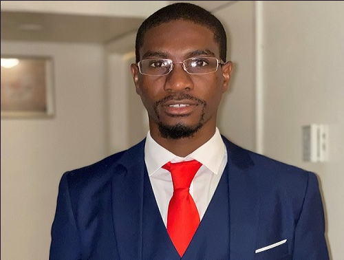

Adolph Frederic
15201 Memorial Highway, Miami, FL, 33169 |
fredericmkadolph209@gmail.com |
305-497-5299 |
LinkedIn

Summary
Highly motivated professional seeks to leverage business experience and academic acumen in pursuit of a challenging new role in Web Development.
Capable of implementing effective development strategies and exploring features as they are being designed to identify coding, functionality, and user
experience issues. Enjoys collaborative efforts and excited to work with fellow developers to address issues proactively. Thrives in dynamic web development
environments with rapidly evolving priorities. Recognized overall for a strong work ethic, integrity, and a high degree of personal initiative.
-Key Skills-
Strategic Planning | Reporting | Test Plans | Results Interpretation | Articulate Communication | Time Management
Team Collaboration | Complex Problem Solving | Security Awareness
Microsoft Office 365 | Python | MATLAB | C++ | SolarWinds Service Desk | Kali Linux | Microsoft Azure
SolarWinds Patch Manager | Tenable | Languages: English, Creole, French
Interests: Robotics, Machine Learning, Wearable Technology
Professional Experience
AECOM | 07/2022 - Present
IT Desktop Analyst
-
Actively monitor SolarWinds Patch Manager to push required updates to workstations.
-
Remove and add devices/members to their respective groups using Active Directory.
-
Oversee Tenable and TrendMicro for critical vulnerabilities and security awareness.
-
Troubleshoot and update software, printers, and hardware devices when failing to function properly.
-
Update software and format hard drives on computers/laptops.
-
Re-image new workstation devices for services.
Florida Department of Transportation | 03/2022 - 07/2022
IT support Technician (Internship)
-
Led the installation of hardware and software components to ensure usability and functuanality.
-
Maintained hardware performance, network connectivity, and ensured electrical safety standards were met.
-
Corrected hardware and software issues and performed system upgrades to improve overall performance
-
Diagnosed hardware and software issues, documented their findings, and formulated strategies to resolve issues.
-
Served as point of contact for error reporting and offered technical support and assistance to 25+ users.
Broward College | 10/2019 - 07/2022
Campus Safety Officer
-
Recorded crimes and accident incidents while collecting statements from principal persons and eyewitnesses.
-
Boosted prevention of criminal acts such as traffic violations and robberies as a visible deterrent.
-
Protected investigations by securing crime scenes and collecting vital evidence, consistently following the proper procedures for documenting findings.
-
Created a safe learning and working environment for staff.
-
Served students, faculty, and visitors by going above and beyond to offer exceptional support for all safety needs.
Education & Certifications
Florida International University (FIU) | 08/2021 - 12/2023
-
Bachelor of Science (B.S) in Computer Engineering
Broward Community College | 01/2016 - 08/2020
-
Associate in Arts in Computer Engineering
National Society of Leadership and Success
Other